Jelling - Palisade - Letztes Update 17.08.2023
Vielleicht schaut ihr euch zur Einstimmung erst diesen YouTube Video (10:11 Minuten) der Aarhus Universitet mit dem Titel "Jelling på Harald Blåtands tid - mysteriet om palisaden" (übersetzt: Jelling zu Harald Blauzahns Zeiten das Geheimnis der Palisade) an, der zwar in dänischer Sprache gehalten ist, der aber auch über englische Untertitel verfügt. Über das Interview mit Anne Pedersen (Leiterin des Jellingprojektet), die tollen Bilder/Drohnenaufnahmen, aufwändige digitale Animationen usw. wird ein lebhaftes Bild der gesamten Jelling Monumente und in erster Linie, von der sie umfassenden Palisade, gezeichnet. Man nimmt an, dass die gesamte Anlage eine Lebenszeit von maximal nur ca. 30 Jahren hatte!
Zu dem Film, der 2017 veröffentlicht wurde, heißt es (übersetzt): "Die neuen Ausgrabungen in Jelling haben völlig neue Antworten auf die Ereignisse in Jelling unter Harald Blauzahn in der zweiten Hälfte des 9. Jahrhunderts geliefert. Doch die Ausgrabungen haben auch einige Rätsel aufgeworfen. Was geschah in der zweiten Hälfte des 9. Jahrhunderts für kurze Zeit tatsächlich in Jelling und was sollte mit der riesigen rautenförmigen Palisade geschehen, die nur wenige Jahre stand? Kommen Sie mit auf eine archäologische Entdeckungsreise."
Die Historie der Palisade
Am 01.10.2005 fanden sich bei Testgrabungen - im Zusammenhang mit dem Neubau der Jelling Sparkasse am Gorms Torv / Mølvangvej - die ersten Spuren der Palisade, wobei sich zu der Zeit niemand vorstellen konnte was man da vor sich hatte und welche gigantischen Ausmaße in ihrer Gesamtheit darüber vorliegen sollten.
Am 24.10.2006 wurde seitens der Vejle Museen versucht die Nordspitze der Schiffssetzung von Jelling zu finden. Tags drauf stieß man bei Baggerarbeiten auf eine Ost-Westlinie, ähnlich einem Kiesstreifen im Lehmuntergrund, Spuren der Palisade, was aber wegen dem Fund von großen Steinen der Schiffssetzung zunächst noch keine große Aufmerksamkeit erregte.
Im Mai 2007 hat man sich diesen Befund dann aber genauer angeschaut und verfolgte ihn über ca. 190 m bevor er in einem 76 Grad Winkel abbog. Es fand sich auch noch ein Durchbruch durch die nördliche Strecke, ein 2 m breites Tor.
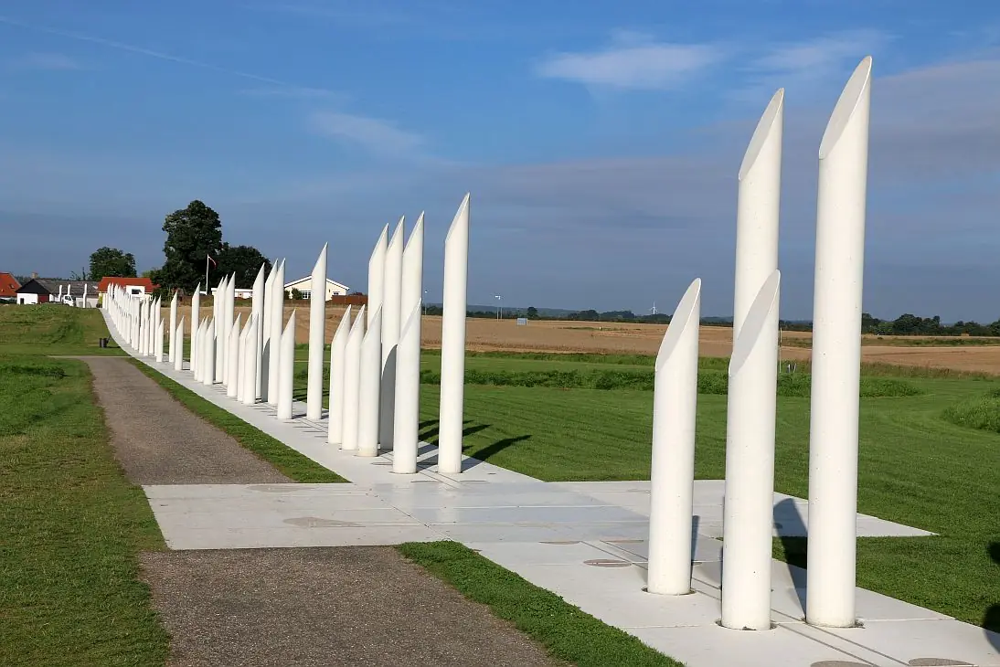
Foto vom 24.08.2016Bislang wurde nur ein einziges Tor entdeckt, man nimmt aber an, dass es eines auf jeder Seite der Palisade gab. Von der nordwestlichen Palisadenecke aus richteten die Archäologen eine Sichtlinie nach Südwesten über das Feld. Dieser Linie musste die Palisade folgen, wenn sie regelmäßig war. Eine Testgrabung bestätigte die Theorie und Jelling war um ein neues, bisher unbekanntes Denkmal von gigantischer Größe reicher.
Am 10. Juli 2007 brachte eine Testgrabung unter einigen abgerissenen Häusern südlich von Südhügel etwas zutage, das wie Palisadenspuren aussah. Allerdings trauten sich die Forscher damals noch nicht, es ganz zu glauben. Am 8. Juli 2007 wurde ein 31 Meter langes Stück der Palisade freigelegt. Sie verläuft weiter unter Häusern, die 2011 abgerissen wurden. Die Straße, die früher unterhalb des Südhügels verlief, wurde entfernt.
Am 25. August 2008 wurde die Westseite der Palisade gefunden, genau dort, wo sie sein sollte. Jetzt war klar, dass die Schiffssetzung von einer riesigen Umzäunung umgeben war. Der Bodenbefund der Ausgrabung zeigte hier zum ersten Mal, dass die Palisade aus vertikalen Brettern bestand, deren Abdruck im Boden den von hölzernen Eisenbahnschwellen ähnelte.
Durch diese Ausgrabungen waren dann auch die Maße der Planken von ca. 15 x 30 cm erstmals deutlich zu erkennen. Sie standen Seite an Seite in einem mit Lehm und Steinen gefüllten Graben. Ausleger, also vertikale Stützpfosten, standen bei ca. jeder fünften Planke. Sie stehen dicht an der Außenseite der Holzwand und ein wenig von der Wand auf der Innenseite entfernt. Die Sohle liegt etwa 1,25 Meter tiefer als die heutige Oberfläche und an manchen Stellen sogar bis zu zwei Meter tief. Es wird geschätzt, dass die Palisade bis zu 4-5 Meter hoch aus dem Boden ragte. Diese Schätzung basiert auf der Tatsache, dass die Palisade ausgiebig ergraben wurde, weit hinunter in einen extremen Lehmboden. Dachtragende Pfosten in zeitgenössischen Häusern, die viel mehr tragen mussten, sind nicht annähernd so tief eingegraben.
2010 - Die südöstliche Ecke wurde nicht gefunden. Aber zwei Meter unter der aktuellen Oberfläche liegt die Strecke südöstlich von Smededammen. Von hier aus sind es ca. 30 Meter bis zu der Stelle, an der die Ecke sein sollte. Es besteht eine leichte Unsicherheit, da die ansonsten geraden Seiten der Palisade sich kurz vor Erreichen einer Ecke leicht nach innen zu krümmen scheint.
Im Mai 2010 fanden weitere Ausgrabungen südlich des Südhügels statt. Ein YouTube Video (4:29 Minuten) zeigt ein Interview vor Ort mit dem Museumsinspektor Steen Wulf Andersen. Er erzählt darin - in dänischer Sprache - von den Spuren der riesigen Palisade rund um die Jelling-Denkmäler.
Am 4. August 2010 gelang es schließlich, die Palisadenstrecke südlich von Smededammen zu finden, auch hier ca. 30 Meter von der berechneten Südostecke entfernt. Es geschah fast fünf Jahre nachdem die ersten Spuren der Palisade aufgetaucht waren. Der Fund war wichtig, da Zweifel darüber bestanden hatten, ob der Zaun nun auch auf der Südseite geradlinig verlief und wie er im Verhältnis zum Smededammen lag. Es ist ungewiss, wie alt der Teich ist. In einem Vertrag von 1666 wird er erstmals unter dem Namen Skiddendammen erwähnt. Es ist schwer vorstellbar, dass die Leute von König Harald Blauzahn die Palisade ins Wasser gebaut haben. Die Senke muss aber dort gewesen sein, sonst wäre die Palisadenstrecke auf der Ostseite nicht so tief. Aber Regenwasser konnte wohl abfließen. Erst später entstand wohl ein Damm, worüber sich der heutige See bildete.
Am 18.10.2010 machten sich die Archäologen nordöstlich der Jelling Kirche erneut an die Arbeit. Sie legten in den ersten Tagen der Woche rund 160 m des Fundamentgrabens für die mächtige Palisade, die Jelling zur Zeit von Harald Blauzahn umrahmte aus der Wikingerzeit, frei. Die Annahme, dass hier ein ähnliches Tor wie das in der nördlichen Linie gefunden werden kann, erwies sich als falsch. Falls sich in der Palisade im Osten eine Öffnung befand, muss diese also weiter südlich - unter heute bebautem Gebiet - gelegen haben.
Die Palisade verläuft demnach im südlichen Abschnitt ca. 10 m durch den heutigen Teich. Um mögliche Spuren der Holzpalisade, die sich unter Wasser ohne Lufteinwirkung erhalten haben könnte, wurde der Teich am Montag, 12. 11.2012 völlig abgelassen. Am Donnerstag, den 15. November 2012 wurde an der Südseite des Teiches dort, wo die Palisadenlinie auf den Teichrand trifft ein kleines Feld umgegraben. Der Maschinenführer erinnerte sich, dass er vor etwa 10 Jahren bei der Reinigung des Teiches mitgeholfen hatte. Es wurden alle losen Hölzer und Äste ein Stück weit aus dem Lehm geschabt. Der Schmiedeteich war zuvor in den Jahren 1916, 1944 und 1996 gereinigt worden. Das verhieß zwar nichts Gutes für die Palisade, doch im Kampf gegen Wasser und Schlamm versuchten die Archäologen dennoch, ihren Verlauf zu lokalisieren. Unter dem Schlamm und einer Mörtelschicht tauchten in einer Reihe 3-4 Pfosten auf, die jedoch der angenommenen Linie der Palisade nicht ganz folgten. Die Reihe verlief parallel zum südlichen Rand des Smededammen, sodass sie möglicherweise stattdessen einen früheren Rand des Teiches markiert haben könnte. Proben des Holzes wurden zur schnellen Holzbestimmung nach Moesgård in der Nähe von Aarhus geschickt ist es überhaupt Eiche, ist das Holz alt, oder stammen die Pfähle einfach aus einer neueren Regulierung des Teiches? Es stellte sich heraus, dass es sich bei dem Baum um eine Eiche handelte und die Archäologen fuhren deshalb mit den Untersuchungen fort. Bohrproben wurden genommen, um darüber paläoökologische Methoden, wie Pollen- und mikroskopische Makrofossilanalyse durchführen zu können. Damit kann man zwischen menschlichen und klimatischen Einflüssen auf die Vegetation unterscheiden. Die Bohrproben konnten dann anhand der Kohlenstoff-14-Datierung zumindest mal in die Wikingerzeit datiert werden.
Im Mai 2013 wurden ein kleiner Teil der im festen Lehmboden noch erhaltenen Palisade geborgen - aus einem Befund von insgesamt ca. 4 m am Stück. Der Rest wurde für die Nachwelt im Teich belassen um ihn für Untersuchungen durch spätere Generationen zu bewahren.
Im Sommer 2018 waren aber diese verbliebenen Teile im Teich plötzlich durch starke Trockenheit bedroht. Es musste eine aufwändige Rettungsaktion zur Bewahrung gestartet werden, da die Austrocknung verheerende Folgen für die Eichenholzreste gehabt hätte. Dazu wurden der Teich mit Stahlplatten in zwei Teile geteilt und das Wasser von der Feuerwehr über Schlauchleitungen von der einen Seite in die andere Seite mit den bewahrten Palisadenresten gepumpt, um deren Austrocknung zu verhindern. Über diesen Link kann man sich zu der Rettungsaktion einen Video (1.02 Minuten) von DR.dk anschauen.
Eine tolle Rekonstruktionszeichnung des gesamten Areals, das von der Palisade umzäunt wurde, von den Vejle Museen kann man hier abrufen.
Um den Verlauf und die Außmaße der Palisade in ihrer Gesamtheit allgemein verständlich darzulegen habe ich mir dieses Luftbild aufbereitet.
Die Palisade, die eine Kantenlänge von ca. 360 m aufweist, wurde im Jahr 2013 durch 4 % weiß Betonpfeiler auf 4 % weiß Betonplatten (ca. 630 Stück von je 0,1 x 1,2 x 2,4 m Größe / Gewicht je 700 kg) in der Landschaft angedeutet!
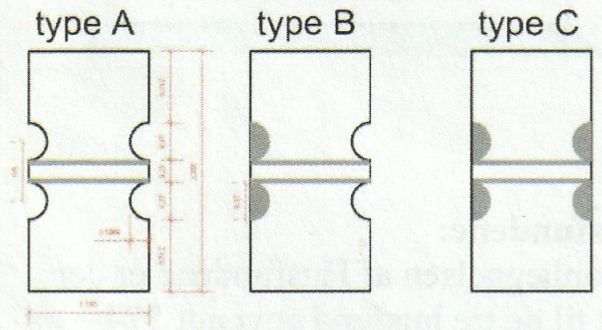
Auf dieser Skizze sieht man die drei verwendeten Plattentypen - A = beidseitig halbkreisförmige Ausschnitte / B = einseitig halbkreisförmiger Ausschnitt und die andere Seite halbkreisförmig sandgestrahlt / C = beidseitig halbkreisförmig sandgestrahlt.
Die aktuell insg. 316 Betonpfeiler (4 % weiß) haben einen Durchmesser von je 28 cm, stehen immer paarweise zusammen, haben eine Länge von 352 cm und 490 cm, ragen 225 cm, bzw. 360 cm über der Erdoberfläche in den Himmel. Sie stecken je ca. 130 cm in der Erde und sie wiegen jeweils 700 kg bzw. 1100 kg. Oben sind sie jeweils in einem Winkel von 23,4 Grad angeschrägt.
Aufnahme vom 18.06.2022 mit meinem Pedelec zum Größenvergleich.

Die Gesamtlänge der bis heute aufgestellten Palisadenreihe beträgt ca. 850 m! Durch eine größzügige Zuwendung des "A.P. Møller Fonden" von 35 Millionen DKK (ca. 4,7 Millionen Euro) im Jahr 2021werden in Jelling weitere Veränderungen bis 2024 vorgenommen. Es soll z.B. der westliche Verlauf der Palisade ebenfalls visualisiert, neue städtische Grünanlagen und Gehwege angelegt und der Verlauf des Heerweges sichtbar gemacht werden.

In dieser o.a. Planskizze (Ausdruck eingescannt), die ich irgendwann im Internet ausgedruckt habe, ist der westliche Palisadenverlauf bereits eingezeichnet, so dass man schon jetzt eine Vorstellung davon bekommt. Der Urheber der Sklizze ist mir nicht bekannt. Über eine Google-Bildersuche fand ich auch nichts mehr.
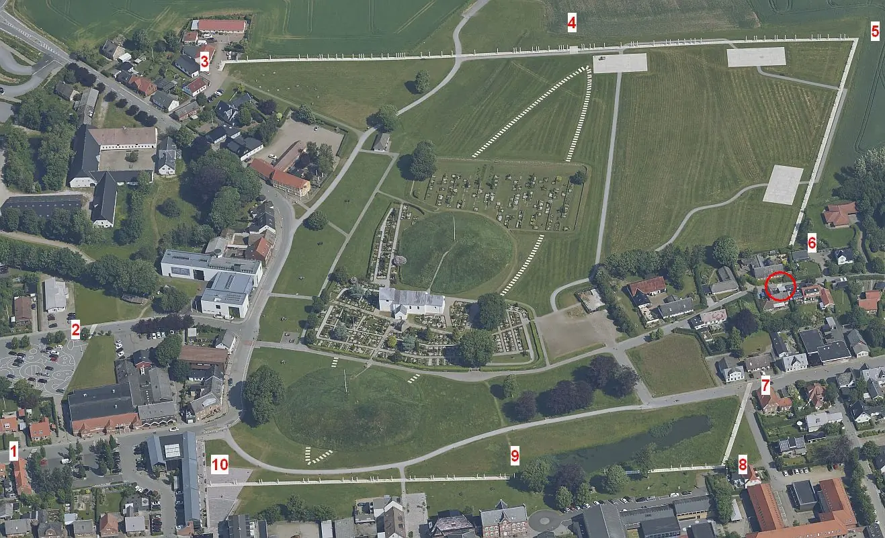
Luftfoto der Jelling Monumente - Aufnahmedatum 17.06.2021 - abgerufen 06.08.2023 - https://skraafoto.dataforsyningen.dk/ - frei von Urheberrechten - von mir zugeschnitten und mit Nummern versehen, zu denen ich nachfolgend meine Fotografien eingefügt habe.
1 - Mølvangvej, zwischen Hausnummern 3 und 6 - querverlaufend - Aufnahmedatum 23.08.2016


2 - Vestergade - Ich musste feststellen, dass ich diese Ansicht offenbar nie selbst fotografiert habe. Das Bild habe ich deshalb heute - 06.08.2023 - bei Google Maps entlehnt.

3 - Nordwestliche Ecke - Aufnahmedatum jeweils 04.06.2015
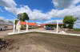 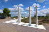 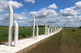


4 - Nordtor - Aufnahmedatum 24.08.2016 - 18.06.2022 und 2 x 04.06.2015
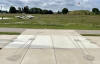 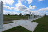 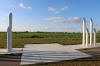


5 - Nordöstliche Ecke - Aufnahmedatum 21.08.2013 (noch im Bau) und 18.06.2022


6 - Nordostseite - Ende vor Bebauung - Aufnahmedatum jeweils 21.08.2013
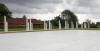 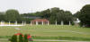 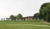


Erst bei der Erstellung dieser Infos fiel mir heute - 08.08.2023 - auf Luftaufnahmen auf, dass es da zwischen 6 und 7 im Thyrasvej einen weiteren schmalen Abschnitt gibt - im Bild mit rotem Kreis gekennzeichnet - an dem man die weißen Betonplatten über die Straße verlegt hat. Palisadenpfosten stehen da keine. In die Ecke bin ich bei meinen Besuchen ja noch nie gekommen! Aber beim nächsten Mal bestimmt.
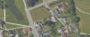

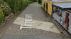

7 - Vejlevej - Aufnahmedatum 21.08.2013

8 - Südöstliche Ecke - Aufnahmedatum jeweils 21.08.2013


9 - Smededammen - Aufnahmedatum 20.08.2013 - 21.08.2013 - 17.06.2022 und 18.06.2022
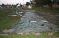 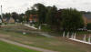 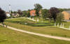 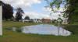 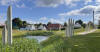


Der Teich "Smededammen" hat heutzutage eine Fläche von ca. 2000 qm und eine Tiefe von 0,5 bis 1 m.
10 - Gorms Torv (Platz) - Aufnahmedatum 21.08.2013 und 04.06.2015


Rekonstruktion eines 4 x 6 m langen Ausschnitts der Palisade - aufgestellt im Bereich des Hintereingangs (Vestergade) des Museums
Harald Blauzahn ließ vor über 1.000 Jahren eine Palisade rund um die
Jelling
Monumente bauen. Mit der Einweihung einer Rekonstruktion im Maßstab 1:1
will man verdeutlichen, wie beeindruckend der Bau war. Am Samstag,
den 30. Juni 2018, wurden 10 Meter der zu
Wikingerzeiten fast 1,5 Kilometer langen Palisade eingeweiht.
Sie umschließt eine Fläche, die der Größe von 20 Fußballfeldern entspricht. Mit
einer neuen Rekonstruktion erhält man einen besseren Überblick über die Sache
und es wird viel einfacher, Umfang und Ausmaß von Haralds Bauwerk zu verstehen.
Die Rekonstruktion ist ein fantastisches Kommunikationsmittel. Wir haben
hier vier mal sechs Meter der Palisade rekonstruiert, und sie sieht ziemlich
beeindruckend aus, aber Harald hat 1440 Meter bauen lassen, sagt
Museumsinspektor Adam Bak - seit 2015 Museumschef
- von
Kongernes Jelling.
Die Palisade bestand aus aufrechten Brettern, die auf beiden Seiten von
großen Pfosten getragen wurden. Insgesamt wird geschätzt, dass in der
Wikingerzeit mindestens 4.000 Eichen für den Bau
verwendet
wurden.
Die Palisade ist das größte uns bekannte Gebäude aus der
dänischen Wikingerzeit - ca. 12,5 ha. Es wurde bei Ausgrabungen im Jahr 2007
entdeckt und hat unser Verständnis von
Harald Blauzahn und den Ereignissen in
Jelling
während seiner Herrschaft erheblich erweitert, sagt Adam Bak.
Gemeinsam mit dem örtlichen Zimmermann Torsten Rye haben
Archäologen den Weg zum Wiederaufbau besprochen, berechnet und getestet, der nun
in
Kongernes Jelling
zu sehen und zu spüren ist.
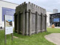 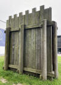 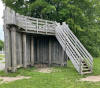 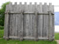 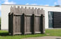 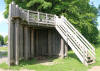 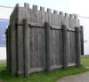 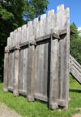


Original Eichenplanken der Palisade aus dem Teich "Smededammen" in der Ausstellung von Kongernes Jelling. Ddie Eichen wurden aller Wahrscheinlichkeit nach im Jahr 968 gefällt.
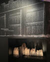 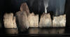 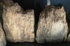 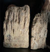


Eigene Aufnahmen vom 17.06.2022
Die Bergung der Plankenteile, die im Mai 2013 durchgeführt wurde, kann man sich über diesen YouTube Video anschauen.
Im April 2014 wurde der Smededammen erneut abgelassen, da man nach besser erhaltenen Planken und Pfosten für dendrochronologische Untersuchungen suchen wollte, nachdem die November Forschungen des Vorjahres die Datierung in die Wikingerzeit per Kohlenstoff-14-Datierung schon mal bestätigt hatten.
Auf der Webseite von "Jellingprojektet"
finden sich mehrere Beiträge zu den Untersuchungen im Smededammen.
Zur Bergung der Holzreste heißt es dort z.B. von Charlotta Lindblom,
Vejle Museen,
übersetzt: "Die Ausgrabungen in diesem
Frühjahr in Smededammen haben weitaus bessere
Ergebnisse erbracht, als wir zu hoffen gewagt hatten. Es blieben nicht nur
Planken und Pfosten erhalten; sie blieben auch in guter Tiefe erhalten. Der
längste Pfosten war gut 50 cm lang. Als klar wurde, mit wie
viel konserviertem Holz wir es zu tun hatten, beschlossen wir, die
Restauratoren des Moesgård-Museums zu kontaktieren, um schnelle Hilfe
bei der eigentlichen Sammlung des Holzes zu erhalten. Der Restaurator
Jesper Frederiksen ist auf die Holzkonservierung spezialisiert
und trug mit wichtigen Richtlinien für die Behandlung des Holzes während der
Ausgrabung sowie mit seinem Fachwissen bei, als die Planken und Pfosten entfernt
werden mussten. Die massiven Eichenbretter sind etwa 15
cm dick und 30 cm breit, während die Pfosten an der Innen- und
Außenseite der Palisade einen Durchmesser von etwa 22 cm haben. Der
Ost-West-Palisadenverlauf selbst neigte sich leicht nach Norden, was vermutlich
auf den Druck der Erdmassen auf die Planken zurückzuführen ist. Aufgrund dieser
Neigung der Palisade war es sinnvoll, zunächst den Bereich um den Baum herum auf
der Südseite freizugraben und den Baum dann mit Unterstützung von Fibertex
Vliesstoff von der Nordseite her freizuschieben. Auf diese Weise wurden die
Planken und Pfosten einzeln freigegraben und hochgehoben. Aufgrund der
Fragilität des Holzes konnten wir nicht, wie ursprünglich geplant, den gesamten
Prozess auf einmal belichten und dokumentieren. Für den Erhalt des Holzes war es
zu riskant. Stattdessen mussten wir jeweils kleinere Lose dokumentieren und dann
mit Hilfe der heutigen digitalen Technologie Fotos und Zeichnungen zu einem
Ganzen zusammenfügen. Anschließend wurden Planken und Pfosten in
Fibertex Vliesstoff eingewickelt, gut mit Wasser angefeuchtet, in
Plastik eingewickelt und zum Moesgård-Museum gebracht. In
Moesgård wurde das Holz gereinigt,
bevor es an die Konservierungsabteilung des
Nationalmuseums in Brede geschickt wurde. Hier müssen Bohlen
und Pfosten vor der Konservierung genauer untersucht und dokumentiert werden.
Doch bevor dies geschieht, muss eine Entscheidung über eine der wichtigsten
Analysen getroffen werden die dendrochronologische Datierung,
die uns hoffentlich Aufschluss darüber geben kann, wann das Holz gefällt
wurde.
Bevor die Ausgrabung in
Smededammen vollständig geschlossen wird, muss der Palisadengraben im
Profil dokumentiert werden und es werden zusätzliche Proben für die Pollen- und
Makrofossilanalyse entnommen. Die Erwartungen an diese Tests sind hoch. Die
Voruntersuchungen von vier
Pollenproben haben bereits gute Ergebnisse gezeigt und mit Hilfe von
Makrofossilien und Kohlenstoff-14-Datierungen lässt sich
hoffentlich feststellen, wie weit die Schichtreihe in die Vergangenheit reicht.
Die Proben können detaillierte Erkenntnisse über die nahe gelegene Landschaft in
der Wikingerzeit liefern und somit auch eine Möglichkeit zur
Rekonstruktion der Landschaftsnutzung in der Region bieten, die mit den
Untersuchungen von Pollen und Makrofossilien aus den Hügeln verglichen
werden kann."
Am besten bewahrt waren Planken im westlichen Ausgrabungsbereich. Der Abstand zwischen den Brettern ist darauf zurückzuführen, dass die Bretter beim Trocknen der Eiche etwas in der Breite geschrumpft sind. Eine Planke wird unten mit einem Keil begradigt
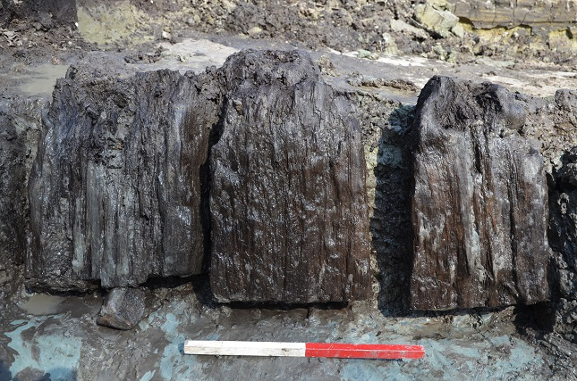
Bildquelle: Planker tages op fra Smededammen / Foto: Peter Jensen, Aarhus Universitet.
Am 16.08.2013 kam es dann zu einer Pressemitteilung des Nationalmuseum Kopenhagen:
"Jetzt liegt das Ergebnis der Jahresringdatierung der Palisade der Jelling-Anlage durch das Nationalmuseum vor und es stellt fest, dass der gewaltige Bau sehr wahrscheinlich aus dem Jahr 968 stammt. Der leitende Forscher am Nationalmuseum Niels Bonde hat die Jahresringdatierung durchgeführt, eine sogenannte dendrochronologische Studie, basierend auf 12 Proben aus der Palisadenwand..."
In einem YouTube Video erklären die Projektleiterin Anne Pedersen und Niels Bonde, der die drendrochronologischen Untersuchungen durchgeführt hat, das Forschungsergebnis zum Alter der Eichenholzfunde im Smededammen.
Literaturhinweise:
Kongens gård i Jelling - von Leif Baun (Journalist bei der Zeitung "Vejle Amts Folkeblad") - in: Lokal Historie fra Sydøstjylland 2010 - S. 22-34 - Darin sind zahlreiche Fotografien der einzelnen Grabungsschnitte zu der Palisade
Webseite "Harald Blåtands palisade i Jelling, ca. 968"Diverse Webseiten innerhalb des "Jellingprojektet":
Smededammen i Jelling naturlig eller kunstig sø?
Træ og sten på bunden af SmededammenPalisaden i Smededammen